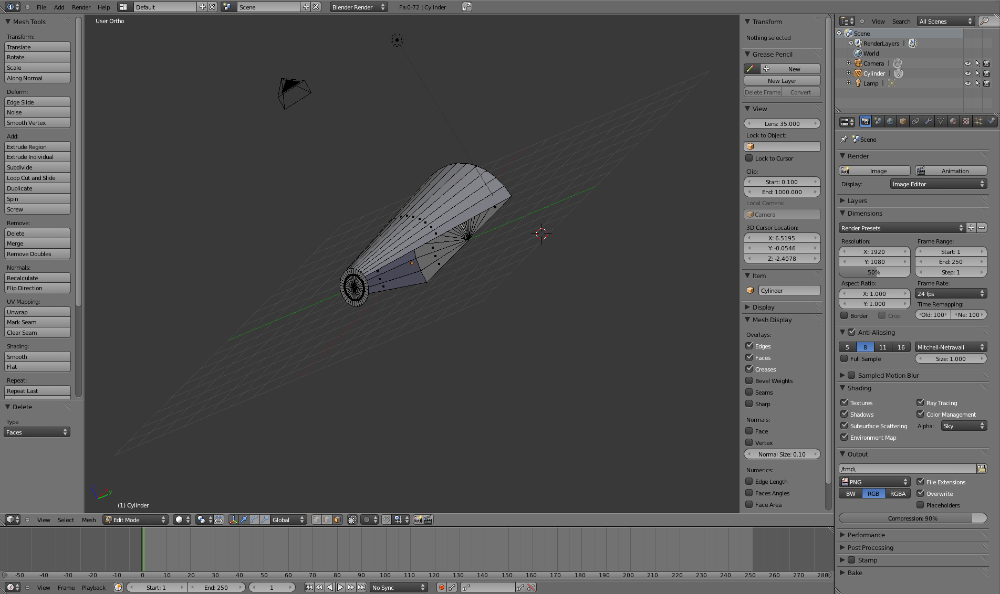
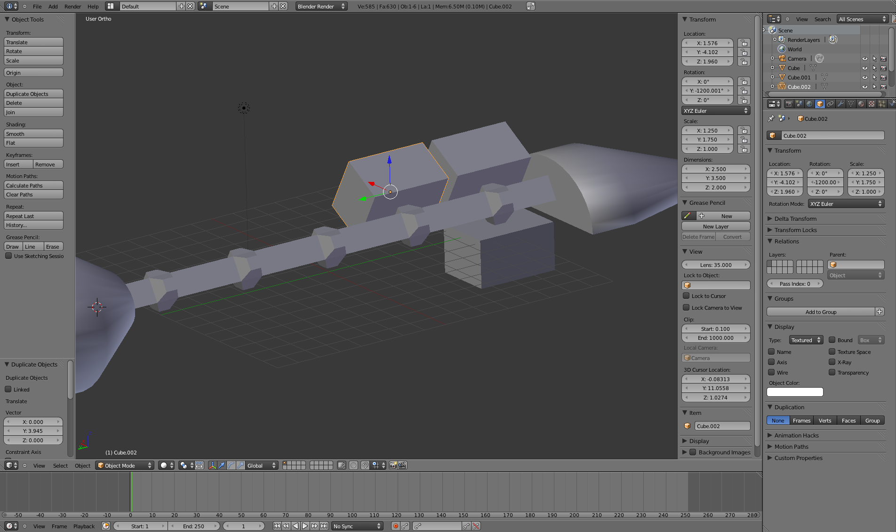
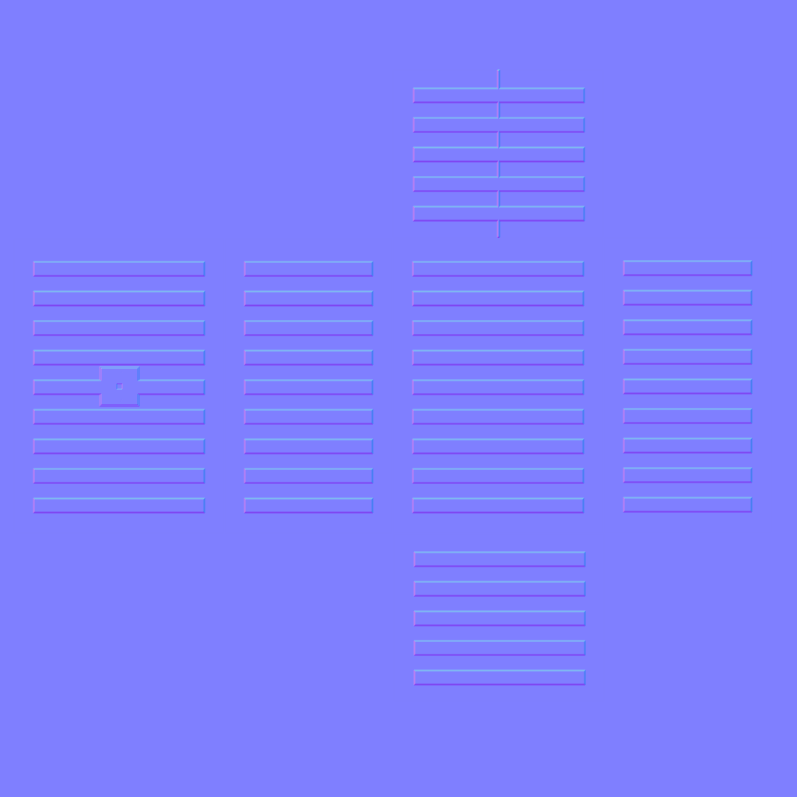

Blender Beginner for Beginner Tutorial: Spaceship & Container
4th June 2011 - Blender 2.58
For a game idea I needed a model of a spaceship. Having learnt from previous tutorials, the main goal of this tutorial is to properly texture a simple model for game engines. Instead of having multiple materials for the mesh and textures applied to just a few faces, there should be a single material for the entire mesh and textures should be images applied to all the faces. Also normal maps should not be black and white, but a special colour scheme. Thus setting up UV mappings and proper normal maps is critical. The spec I created for the ship design is below, followed by the final result. Below that are the steps I followed in its creation. The models and images for texturing are available here.
The ship is from a far future where there is FTL space travel. The FTL drive is reactionless so no need for large exhaust vents or rockets (although small exhausts may be required for manoeuvring thrusters). The ship is an old demilitarized modular corvette, now used as a fast cargo transport. Originally designed as a flexible support platform, it has a number of attachment points for modules (not many attachment points, but due to the size of the modules they take up a lot of space). Previously these would be for lasers, drones, sensor modules or even other small ships. Now generally cargo containers will be attached. In this future, a combat ship is designed to reduce it’s detectability by radiating as little as possible (heat, light, gas and to a lesser extent its radar reflection). As an old support ship, this will be less the case for this model, especially after the refit. Although, there should still be some evidence of the idea - for example, few or no windows. The demilitarization refit saw all the weapon systems and some of the sensors removed, but a better computer control system installed. The engines were untouched. Originally the ship would take a crew of 15-20 people, but with the refit a crew of just a couple of people is enough assuming little combat and no need for 24 hour duty (the old total included shifts of weapons and sensor people, plus support and hierarchy). The old excess living space was converted to cargo holds.
{kind=link}
-
Create a capped cylinder with radius 3, 36 vertices and a depth of 5.
Scale it in down the vertical (Z) axis to 0.8 (this is a diameter of 4 -
0.8 of the original as a ratio, 80% of the original) creating an oval.
This will become the nose of the spaceship.
-
Select the cylinder, go into edit mode and select only the front faces.
Scale it down 0.25 in all axes (to create something like a nose cone).
Select all the side faces below the midline and delete them. Do the same
to the back end. The cylinder should look like the example on the left.
Next the cylinder needs to be closed up again. In vertex select mode,
select the bottom point of the front end, and the mid point and one
neighbouring side point of the back end, fill a triangle (F key). Do the
same with the other side. Then create faces from each neighbouring pairs
of points along the front end with the back end point on the same side
until the cylinder is closed up again - like the picture on the right.
 -
Extrude the back faces a distance of 2 in just the Y axis. This
completes the front of the spaceship.
-
Next we will create a linking section between the nose and engine of the
ship, to which the containers will be attached. Leave edit mode and
deselect all. Using the
guide
from this link, create an equilateral triangle from a cube. Scale
the triangle so each side has a length of 1 and rotate it so it’s
parallel with the back of the ship’s nose.
-
Position the triangle on roughly the centre of the back face. Join
(CTRL-J) the triangle and the ship’s nose. Extrude the triangle 2 in
only the Y axis, then extrude again 1 in the Y axis, then 3, 1, 3, 1, 3,
3, 1, and lastly extrude 2.
-
Now to the engine. Create a UV sphere with dimensions of 8 in the X & Y
axes and 6 in the Z axis. Delete half the sphere.
-
Select the edge loop where the sphere was cut (go into edge slect mode
and press ALT for edge loop select when clicking on one of the edges,
you may need to do this twice). Extrude this loop out 3, then extrude
out another 3 and then scale down the final outer edge loop 0.4.
-
Select two directly opposite points on the outer edge loop and and press
the F key to create a line between then. Subdivide (using the button
under Mesh Tools) this line once to get the centre point of the edge
loop. Select the center point and two connected points on the edge loop.
Press F to create a face. Continue doing this for all the points in the
loop until the the end of the engine is capped.
-
Move the new engine object to the back of the linking section. Join all
the objects together and then smooth curved surfaces (select the faces
to be smothed and then press the Smooth button under Mesh Tools). Ensure
the model has a meaningful name and position it so that the centre of
the ship is on the origin (this will work better when imported into a
game emgine).
-
Next to create the containers that will attach to the ship. Take a copy
of the ship’s blender file and rename it container.blend (or something
similar). Close the old ship file and open the new one. To get the size
of the containers right, try positioning a few on the ship. I came up
with a size of 2.5 in the X axis, 3.5 Y axis and 2 in the Z axis. Once
this is done delete everything except one container and position it on
the origin. Rename it container. That’s it for the model, now its time
for the material.
 -
Create a new UV view and unwrap the container (with the container
selected use the menu item Mesh -\> UV Unwrap… -\> Unwrap in the 3D
View) - 6 rectangles should now appear in the UV view representing the 6
faces of the container. Select Image -\> New Image from the UV view
menu. Select each face on the container individually in the 3D view and
position the corresponding face on the UV view. I did this so the
proportions of the UV faces matched the proportions of the face in the
3D view. Sometimes Blender does this automatically, but not for me this
time.
-
Create a test image and paint on it (Image -\> Image Painting) to test
the UV mapping, Then apply this image as a texture on the container
material. Select the container, create a new material on the Material
panel of the Properties view. Then create a new Image texture on the
Textures panel. Load the test image and apply as a UV mapping (the
Mapping subpanel of the Texture). Then set the model to display
textured. The numbers should appear on the expected faces with the
expected orientation. If not move your mapped UV faces around.
- With the faces in the right places, on the UV view create a new image (size 1024x1024) with a white background and save as targa (.tga) file. Also export the UV face layout (menu item UVs -\> Export UV Face Layout) with the same size. In your OS’s file manager copy the texture image and postpend the name with normalmap.
-
Load the blank container texture in
Gimp or your favourite image
manipulation program. Then “load as layer” the layout image. Be careful
that when you make a change, you change the bottom layer (the blank
image) and not the layout layer and don’t merge them. write JARRAH (or
whatever logo you like) on what was face 2, using the layout to guide
the best position. Merge down the text and white background, delete the
layout and save the image. The image on the left below is one with the
layout layer, and the one on the right is when the layout has been
deleted.
-
Install the normalmap
plugin (available here) to Gimp and load the blank normal map image.
We need to draw a greyscale version of the container crenulations and
attachment point onto the image and then convert it to a proper normal
map with the plugin. White for the high points, black for the low. You
can look on the Web for some examples to convert to greyscale as a
starting point. Load the layout image as a layer to guide your drawing.
My greyscale normal map is shown on the left below. I created each face
separately in MSPaint then combined by loading them as layers in gimp
and merging them. Once the greyscale image in complete, convert it to a
proper normal map with the menu command Filters -\> Map -\> Normalmap…
(just use the default settings for now). The result is on the right
below.
 -
In Blender the images created above can be applied as textures using a
UV mapping with one affecting colour and the normal map just affecting
normals. Save the model without the material or textures, then can
applied these later the game engine. The left image below is the
container in Blender, the right image is the container in Unity (with
the Bumped Specular rendered with uses both a colour map image and
separate normal map image).
</center> </li> - Now to got back to the ship’s blender file and do the same. Create a UV view. Unwrap the ship model (I used Smart Unwrap), create and save texture and layout images. Below is the result of the unwrap.
- Create colour and normal map images for the ship to your own design. Below are the ones I created and used to create the result image at the start of this tutorial. Just create a single material for the whole ship model and add two image textures, one (left below) affecting colour, the other (right) normals. Similar for Unity. The containers are imported by using the append command (SHIFT-F1 and then navigate to the container object). For interest that QR code says “Jarrah Shipping Company. Fast Shipping. Cheap Rates.” - it seemed common, yet futuristic.
</ol> </p>And it is complete! You can download both the ship and container blend file here along with all the texture images and intermediate image layers (zipped).

Spaceship & Container by Charles Cordingley is licensed under a Creative Commons Attribution 2.0 UK: England & Wales License. - Now to got back to the ship’s blender file and do the same. Create a UV view. Unwrap the ship model (I used Smart Unwrap), create and save texture and layout images. Below is the result of the unwrap.
{kind=link}
{kind=link}
{kind=link}
{kind=link}
{kind=link}
{kind=link}
{kind=link}
{kind=link}
{kind=link}
{kind=link}
{kind=link}
{kind=link}
{kind=link}
{kind=link}
{kind=link}
{kind=link}
{kind=link}
{kind=link}
{kind=link}
{kind=link}
{kind=link}
{kind=link}
{kind=link}
{kind=link}
{kind=link}
{kind=link}
{kind=link}